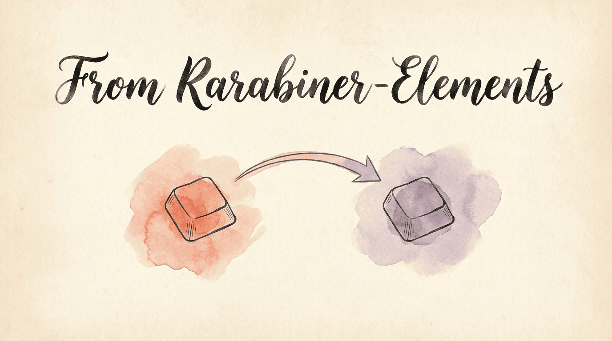

Screenshot — Custom Rules tab (what you'll see instead of JSON):
Screenshot — Custom Rules tab (what you'll see instead of JSON):
If you're using Karabiner-Elements and curious about KeyPath, this page maps the concepts you know to how KeyPath works — and helps you decide if switching makes sense.
Karabiner-Elements is an excellent tool that pioneered keyboard remapping on macOS. KeyPath builds on that foundation with a different engine (Kanata) that offers specific advantages:
| Karabiner-Elements | KeyPath | |
|---|---|---|
| Config format | JSON (verbose, complex) | Kanata S-expressions (concise) |
| Tap-hold | to_if_alone + timeout |
4 tap-hold variants, per-key tuning |
| Home row mods | Possible via complex JSON, global timeout, no misfire prevention | Built-in with opposite-hand activation, fast typing protection, per-finger timing |
| Per-finger timing | Global timeout only | Individual finger sensitivity |
| Layers | Separate rule sets | First-class deflayer with layer-switch |
| App-specific | Per-app rules via JSON | Automatic layer switching via TCP |
| Configuration | JSON editing or Karabiner UI | Visual UI + direct config editing |
| Engine | Custom C++ event tap | Kanata (Rust, purpose-built for tap-hold) |
Karabiner's strengths that KeyPath doesn't replicate:
Here's how Karabiner concepts translate to KeyPath:
In Karabiner: Edit JSON to map one key to another.
In KeyPath: Open the Custom Rules tab, set your Start key and Finish key, click Save. KeyPath generates the configuration for you.
In Karabiner: Write a complex JSON rule with to_if_alone and a timeout.
In KeyPath: Create a rule, enable the Hold, Double Tap, etc. toggle, and choose from four hold behavior options — Basic, Trigger Early, Quick Tap, or Custom Keys. Each offers different activation strategies. See the One Key, Multiple Actions guide for details.
In Karabiner: Create separate rule sets and manage profiles.
In KeyPath: Layers are a first-class concept. Create multiple layers in the UI and use tap-hold keys or dedicated layer-switch keys to move between them.
In Karabiner: Import or hand-write complex JSON rules from the community library.
In KeyPath: Use the pre-built rule collections (Hyper Key, Home Row Mods, Quick Launcher, etc.) or create custom rules through the UI. KeyPath ships with 16 built-in rule collections that cover the most popular Karabiner complex modifications.
In Karabiner: Per-app conditions in JSON rules.
In KeyPath: Go to the Custom Rules tab, click New Rule, select an app, and add your mappings. KeyPath switches layers automatically when you switch apps — no manual toggling needed. See the Window Management guide.
Screenshot — Custom Rules tab (what you'll see instead of JSON):
┌─────────────────────────────────────────────────────┐
│ Custom Rules │
│ │
│ ┌────────────────────────────────────────────────┐ │
│ │ EVERYWHERE (global rules) │ │
│ │ caps_lock ──→ escape │ │
│ │ a (hold) ──→ left_shift │ │
│ │ f (hold) ──→ left_command │ │
│ └────────────────────────────────────────────────┘ │
│ │
│ ┌────────────────────────────────────────────────┐ │
│ │ 🧭 SAFARI [✏] [🗑] │ │
│ │ h ──→ left_arrow │ │
│ │ j ──→ down_arrow │ │
│ └────────────────────────────────────────────────┘ │
│ │
│ [ ↺ Reset ] [ + New Rule ] │
└─────────────────────────────────────────────────────┘
No JSON editing — visual rule cards with edit/delete.This is where the difference is most noticeable. If you use home row mods in Karabiner, you'll find KeyPath significantly more capable:
| Aspect | KeyPath | Karabiner-Elements |
|---|---|---|
| Tap-hold variants | 4 variants, tunable per key | Single to_if_alone |
| Split-hand detection | Built-in | Requires complex JSON rules |
| Per-finger timing | Per-key offsets via sliders | Global timeout only |
| Layer integration | Hold-activate layers | Separate rule sets |
| Configuration | Visual UI with sliders | JSON editing |
| Engine | Kanata (purpose-built for tap-hold) | General-purpose JSON rules |
Not simultaneously. Both tools intercept keyboard events at the system level, and running two event interceptors causes conflicts (dropped keys, double-presses, system instability). You should fully disable or uninstall Karabiner before using KeyPath.
KeyPath's installer wizard will detect running Karabiner processes and warn you if there's a conflict.
Note: KeyPath uses the same Karabiner VirtualHIDDevice driver for its virtual keyboard. If you already have Karabiner installed, this driver is already present and approved.
Before uninstalling Karabiner, export or screenshot your rules:
# Your Karabiner config is at:
cat ~/.config/karabiner/karabiner.json
# Or copy it somewhere safe:
cp ~/.config/karabiner/karabiner.json ~/Desktop/karabiner-backup.jsonFollow the Installation guide. KeyPath's wizard handles permissions and driver setup.
Quit Karabiner-Elements from its menu bar icon, or:
# Quit Karabiner
osascript -e 'quit app "Karabiner-Elements"'
# Optionally stop the daemon
launchctl bootout system/org.pqrs.karabiner.karabiner_grabber 2>/dev/nullKeyPath can automatically convert most of your Karabiner rules. Two ways to import:
During setup (recommended): KeyPath's installation wizard detects ~/.config/karabiner/karabiner.json and offers one-click import. You can review which rules will convert, see warnings for unsupported features, and choose which to import.
From the command line:
# Import from your Karabiner config
keypath import karabiner ~/.config/karabiner/karabiner.json
# Import a specific profile (by index)
keypath import karabiner ~/.config/karabiner/karabiner.json --profile=1
# Merge all rules into one collection
keypath import karabiner ~/.config/karabiner/karabiner.json --collection="My Karabiner Rules"The converter handles simple remaps, tap-hold rules, chords, app-specific conditions, shell commands, and macros. It reports rules that it skips and the reason for each skip.
What gets skipped (with warnings):
If you see skipped rules, you can usually recreate them using KeyPath's native features — layers, packs, or the Action URI system.
If your Karabiner config is simple, you might prefer starting fresh with KeyPath's built-in packs instead of importing:
Browse the Pack Gallery for everything available.
KeyPath's per-finger timing, opposite-hand activation, and fast typing protection may mean you need less tweaking than your Karabiner setup required. Start with defaults and adjust from there.
| Karabiner Rule | KeyPath Equivalent |
|---|---|
| Caps Lock → Escape | Pre-built "Caps Lock Remap" rule |
| Caps Lock → Escape/Control | Pre-built rule with tap-hold |
| Caps Lock → Hyper | Pre-built "Caps Lock Remap" → Hyper mode |
| Home row mods | Pre-built "Home Row Mods" rule |
| Vi-style arrows (HJKL) | Custom rule or What You Can Build |
| App-specific shortcuts | Custom Rules tab |
| Launch apps from keyboard | app launching |
| Window snapping | Window Management |
Not every Karabiner feature has a direct KeyPath equivalent. Here's the current state:
| Karabiner Feature | KeyPath Status | Notes |
|---|---|---|
| Simple remaps | Supported | defsrc / deflayer |
Tap-hold / to_if_alone |
Supported | 4 variants, more control than Karabiner |
| Layers | Supported | First-class deflayer with layer-switch / layer-toggle |
| App-specific rules | Supported | Automatic layer switching via TCP |
| Simultaneous key combos | Supported | Kanata chord action |
| Mouse button remapping | Limited | Kanata supports mouse keys, but Karabiner's mouse button conditions are more flexible |
| Device-specific rules | Limited | Kanata's device-if works in raw config, but there is no UI (see #203) |
| Complex variable conditions | Limited | Kanata's switch action covers most cases, but some multi-variable conditions need restructuring |
| Profile switching | Deferred | Karabiner lets you switch between profiles; KeyPath uses a single config with layers |
| Community rule import | Limited | Built-in collections are available; community sharing and direct community-library import are not provided (Karabiner has thousands) |
| Pointing device rules | Limited | Kanata has mouse key support but not Karabiner's full pointing device condition system |
KeyPath includes a built-in Karabiner JSON config converter — see step 4 above for how to use it. The importer accepts Karabiner JSON or a complex-modifications rule file; Goku EDN is outside this importer path. Keep the original config as a backup and inspect the skipped-rule warnings before deciding what to recreate using KeyPath's visual rule editor or the CLI.